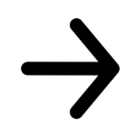

<!DOCTYPE html>
<html>

<head>
    <title>Individual differences in affective responses</title>
    <script src="https://unpkg.com/jspsych@7.2.1"></script>
    <script src="https://unpkg.com/@jspsych/plugin-html-keyboard-response@1.1.0"></script>
    <script src="https://unpkg.com/@jspsych/plugin-image-keyboard-response@1.1.0"></script>
    <script src="https://unpkg.com/@jspsych/plugin-survey-likert@1.1.0"></script>
    <script src="https://unpkg.com/@jspsych/plugin-html-button-response@1.1.0"></script>
    <script src="https://unpkg.com/@jspsych/plugin-survey-html-form@1.0.0/dist/index.browser.min.js"></script>
    <script src="https://unpkg.com/@jspsych/plugin-survey-text@1.1.0/dist/index.browser.min.js"></script>
    <script src="https://unpkg.com/@jspsych/plugin-survey-multi-choice@1.1.1/dist/index.browser.min.js"></script>
    <script src="https://unpkg.com/@jspsych/plugin-preload@1.1.0"></script>
    <script src="https://unpkg.com/@jspsych/plugin-instructions@1.1.0/dist/index.browser.min.js"></script>
    <script src="https://unpkg.com/@jspsych/plugin-fullscreen@1.1.1/dist/index.browser.min.js"></script>
    <script src="https://unpkg.com/@jspsych/extension-webgazer@1.0.0"></script>
    <script src="https://unpkg.com/@jspsych/plugin-webgazer-init-camera@1.0.0"></script>
    <script src="https://unpkg.com/@jspsych/plugin-webgazer-calibrate@1.0.0"></script>
    <script src="https://unpkg.com/@jspsych/plugin-webgazer-validate@1.0.0"></script>
    <script src="webgazer.js"></script>
    <script src="stimuli.js"></script>
    <script src="webcam.js"></script>
    <script src="consent.js"></script>
    <script src="general_instructions.js"></script>
    <script src="info_sheet.js"></script>
    <script src="end_block.js"></script>
    <script src="debrief_sheet.js"></script>
    <script src="IUS.js"></script>
    <script src="LMRUS.js"></script>
    <script src="Mini_MASQ.js"></script>
    <script src="demographics.js"></script>
    <link href="https://unpkg.com/jspsych@7.2.1/css/jspsych.css" rel="stylesheet" type="text/css" />
    <style>
        .fixation_qm {
            font-size: 60px; 
            font-weight: bold; 
            position:relative;
        };

        .outcome_qm{
            font-size: 20px; 
            font-weight: bold; 
            position:relative;
        };

    </style>
</head>

<body></body>
<script>

    /* initialize jsPsych */
    var jsPsych = initJsPsych({
        extensions: [
            { type: jsPsychExtensionWebgazer }],
        // on_finish: function () {
        //     jsPsych.data.displayData();
        // }
    });

    var enter_fullscreen = {
      type: jsPsychFullscreen,
      fullscreen_mode: true
    };

    var exit_fullscreen = {
      type: jsPsychFullscreen,
      fullscreen_mode: false,
      delay_after: 0
};


    var init_camera_trial = {
        type: jsPsychWebgazerInitCamera
    };

    /* create timeline */
    var timeline = [];

    var ID = [];

    /* preload images */
    var preload = {
        type: jsPsychPreload,
        images: ['img/arrow_left.png', 'img/arrow_right.png', 'img/cong_right.png', 'img/cong_left.png', 'img/incong_right.png', 'img/incong_left.png']
    };
    timeline.push(preload);


    /* define welcome message trial */
    var welcome = {
        type: jsPsychHtmlKeyboardResponse,
        stimulus: "Welcome to the experiment. Press any key to begin."
    };

    var goodbye = {
      type: jsPsychHtmlKeyboardResponse,
      stimulus: "You have reached the end of the experiment. You can now close this webpage."
    }
    

    var camera_instructions = {
        type: jsPsychHtmlButtonResponse,
        stimulus: `
          <p>In order to participate you must allow the experiment to use your camera.</p>
          <p>You will be prompted to do this on the next screen.</p>
          <p>If you do not wish to allow use of your camera, you cannot participate in this experiment.<p>
          <p>It may take up to 30 seconds for the camera to initialize after you give permission.</p>
        `,
        choices: ['Got it'],
      }

      var init_camera = {
        type: jsPsychWebgazerInitCamera
      }

      var calibration_instructions = {
        type: jsPsychHtmlButtonResponse,
        stimulus: `
          <p>Now you'll calibrate the eye tracking, so that the software can use the image of your eyes to predict where you are looking.</p>
          <p>You'll see a series of dots appear on the screen. Look at each dot and click on it.</p>
        `,
        choices: ['Got it'],
      }

      var calibration = {
        type: jsPsychWebgazerCalibrate,
        calibration_points: [
          [25,25],[75,25],[50,50],[25,75],[75,75]
        ],
        repetitions_per_point: 2,
        randomize_calibration_order: true
      }

      var validation_instructions = {
        type: jsPsychHtmlButtonResponse,
        stimulus: `
          <p>Now we'll measure the accuracy of the calibration.</p>
          <p>Look at each dot as it appears on the screen.</p>
          <p style="font-weight: bold;">You do not need to click on the dots this time.</p>
        `,
        choices: ['Got it'],
        post_trial_gap: 1000
      }

      var validation = {
        type: jsPsychWebgazerValidate,
        validation_points: [
          [25,25],[75,25],[50,50],[25,75],[75,75]
        ],
        roi_radius: 200,
        time_to_saccade: 1000,
        validation_duration: 2000,
        data: {
          task: 'validate'
        }
      }

      var recalibrate_instructions = {
        type: jsPsychHtmlButtonResponse,
        stimulus: `
          <p>The accuracy of the calibration is a little lower than we'd like.</p>
          <p>Let's try calibrating one more time.</p>
          <p>On the next screen, look at the dots and click on them.<p>
        `,
        choices: ['OK'],
      }

      var recalibrate = {
        timeline: [recalibrate_instructions, calibration, validation_instructions, validation],
        conditional_function: function(){
          var validation_data = jsPsych.data.get().filter({task: 'validate'}).values()[0];
          return validation_data.percent_in_roi.some(function(x){
            var minimum_percent_acceptable = 50;
            return x < minimum_percent_acceptable;
          });
        },
        data: {
          phase: 'recalibration'
        }
      }

      var calibration_done = {
        type: jsPsychHtmlButtonResponse,
        stimulus: `
          <p>Great, we're done with calibration!</p>
        `,
        choices: ['OK']
      }

    /* define instructions trial */
    var instructions = {
        type: jsPsychHtmlKeyboardResponse,
        stimulus: `
        <p>In this task you will view blocks of trials with arrow stimuli. Before each block of trials you will receive information telling you whether you can win or lose more voucher money, depending on how you perform.</p><p>In some blocks of trials you cannot win or lose voucher money.</p>
        <p>In each trial, you will need to identify what direction the centre arrow stimulus is pointing (e.g. either left or right).</p><p>Sometimes you will receive feedback as to how you are performing (e.g. after you give a response, a text display will tell you if you got the trial “correct” or “incorrect”).</p><p>Sometimes you won’t receive any feedback as to how you are performing (e.g. after you give a response, a “?” will appear).</p>
        <p>At the end of each block of trials you will need to complete some ratings of how you felt during the block. The total voucher money you win will be calculated across the task and will be revealed at the end of the task.</p>
        <p>Throughout the task please try to maintain attention to the screen and to respond as quickly as you can using the keyboard. The trial will move on if you do not respond quickly enough.</p>
        <p>Press any key to begin</p>
        <div style='width: 500px;'>
        <div style='float: left;'></img>
        <p class='small'><strong>Press the left arrow key</strong></p></div>
        <div style='float: right;'></img>
        <p class='small'><strong>Press the right arrow key</strong></p></div>
        </div>
      `,
        post_trial_gap: 2000
    };

    /* define fixation */
    var fixation = {
        type: jsPsychHtmlKeyboardResponse,
        stimulus: '<p style="font-size:60px;font-weight:bold;">+</p>',
        choices: "NO_KEYS",
        trial_duration: 500,
        data: {
            task: 'fixation'
        }
    };

    var practice_stimuli = [
        { stimulus: "img/cong_left.png", correct_response: 'ArrowLeft' },
        { stimulus: "img/cong_right.png", correct_response: 'ArrowRight' },
        { stimulus: "img/incong_left.png", correct_response: 'ArrowLeft' },
        { stimulus: "img/incong_right.png", correct_response: 'ArrowRight' }
    ];

    var test = {
        type: jsPsychImageKeyboardResponse,
        stimulus: jsPsych.timelineVariable('stimulus'),
        choices: ['ArrowLeft', 'ArrowRight'],
        trial_duration: 800,
        extensions: [
            {
                type: jsPsychExtensionWebgazer,
                params: {targets: ['#jspsych-image0keyboard-response-stimulus']}
            }
        ],
        data: {
            task: 'flanker',
            correct_response: jsPsych.timelineVariable('correct_response')
        },
        on_finish: function (data) {
            data.correct = jsPsych.pluginAPI.compareKeys(data.response, data.correct_response);
        }
    };

    var outcome = {
        type: jsPsychHtmlKeyboardResponse,
        stimulus: function (data) {
            if (jsPsych.data.get().last(1).trials[0].correct == true) {
                return '<p class="outcome_qm" style="font-size:30px;font-weight:bold;">CORRECT</p>'
            } else if (jsPsych.data.get().last(1).trials[0].response == null) {
                return '<p class="outcome_qm" style="font-size:30px;font-weight:bold;">MISSED</p>'
            }
            else {
                return '<p class="outcome_qm" style="font-size:30px;font-weight:bold;">INCORRECT</p>'
            }
        },
        trial_duration: 1000,
        data: {
            task: "feedback"
        }
    };

    var show_data = {
        type: jsPsychHtmlKeyboardResponse,
        stimulus: function() {
          var trial_data = jsPsych.data.getLastTrialData().values();
          var trial_json = JSON.stringify(trial_data, null, 2);
          return `<p style="margin-bottom:0px;"><strong>Trial data:</strong></p>
            <pre style="margin-top:0px;text-align:left;">${trial_json}</pre>`;
        },
        choices: "NO_KEYS"
      };

    var blank = {
        type: jsPsychHtmlKeyboardResponse,
        stimulus: "",
        choices: "NO_KEYS",
        trial_duration: 500,
        data: {
            task: "blank"
        }
    };

    var question_outcome ={
        type: jsPsychHtmlKeyboardResponse,
        stimulus: '<p class="fixation_qm"; ;style="font-size:60px;font-weight:bold;">?</p>',
        choices: "NO_KEYS",
        trial_duration: 1000,
        data: {
            task: "question_outcome"
        }

    };

    var negative_block ={
        type: jsPsychHtmlKeyboardResponse,
        stimulus:`
        <p>You can lose voucher money in this block.
        <p>Press any key to begin.</p>
        `,

    };

    var positive_block ={
        type: jsPsychHtmlKeyboardResponse,
        stimulus:`
        <p>You can win voucher money in this block.</p>
        <p>Press any key to begin.</p>
        `,

    };

    var practice_instructions = {
        type: jsPsychHtmlKeyboardResponse,
        stimulus:`
        <p>You will now be presented with a few practice trials.</p> 
        <p>Press any key to begin.</p>
        `,
    };

    var debrief_instructions = {
        type: jsPsychHtmlKeyboardResponse,
        stimulus:`
        <p>Thank you for taking part. Based on your task performance you won an additional £5 in vouchers.</p> 
        <p>Press any key to continue.</p>
        `,
    };

    var neutral_block ={
        type: jsPsychHtmlKeyboardResponse,
        stimulus:`
        <p>You can’t win or lose any voucher money in this block.</p>
        <p>Press any key to begin.</p>
         `,

    };

    var practice_procedure = {
        timeline: [fixation, test, outcome, blank],
        timeline_variables: practice_stimuli,
        data: {
            phase: 'practice',
            block: 'practice'
        },
        randomize_order: true
    };

    var start_task = {
        type: jsPsychHtmlKeyboardResponse,
        stimulus: `
        <p>You have completed the practice trial.</p>
        <p>Press any key to begin.</p>
      `,
        post_trial_gap: 1000
    };

    var neutral_stimuli = test_stimuli.filter(item => {
        return item.block === `neutral`;
    });

    var positive_stimuli = test_stimuli.filter(item => {
        return item.block === `positive`;
    });

    var negative_stimuli = test_stimuli.filter(item => {
        return item.block === `negative`;
    });

    var test_neutral_with_feedback = {
        timeline: [fixation, test, outcome, blank],
        timeline_variables: neutral_stimuli,
        extensions: [
            {
                type: jsPsychExtensionWebgazer,
                params: {targets: ['#jspsych-image0keyboard-response-stimulus']}
            }
        ],
        data: {
            phase: 'test',
            block: 'neutral_with_feedback'

        },
        randomize_order: false

    };

    var test_neutral_without_feedback = {
        timeline: [fixation, test, question_outcome, blank],
        timeline_variables: neutral_stimuli,
        extensions: [
            {
                type: jsPsychExtensionWebgazer,
                params: {targets: ['#jspsych-image0keyboard-response-stimulus']}
            }
        ],
        data: {
            phase: 'test',
            block: 'neutral_without_feedback'

        },
        randomize_order: false

    };

    var test_negative_with_feedback = {
        timeline: [fixation, test, outcome, blank],
        timeline_variables: negative_stimuli,
        extensions: [
            {
                type: jsPsychExtensionWebgazer,
                params: {targets: ['#jspsych-image0keyboard-response-stimulus']}
            }
        ],
        data: {
            phase: 'test',
            block: 'negative_with_feedback'

        },
        randomize_order: false
    };

    var test_negative_without_feedback = {
        timeline: [fixation, test, question_outcome, blank],
        timeline_variables: negative_stimuli,
        extensions: [
            {
                type: jsPsychExtensionWebgazer,
                params: {targets: ['#jspsych-image0keyboard-response-stimulus']}
            }
        ],
        data: {
            phase: 'test',
            block: 'negative_without_feedback'

        },
        randomize_order: false

    };

    var test_positive_with_feedback = {
        timeline: [fixation, test, outcome, blank],
        timeline_variables: positive_stimuli,
        extensions: [
            {
                type: jsPsychExtensionWebgazer,
                params: {targets: ['#jspsych-image0keyboard-response-stimulus']}
            }
        ],
        data: {
            phase: 'test',
            block: 'positive_with_feedback'

        },
        randomize_order: false
    };
    var test_positive_without_feedback = {
        timeline: [fixation, test, question_outcome, blank],
        timeline_variables: positive_stimuli,
        extensions: [
            {
                type: jsPsychExtensionWebgazer,
                params: {targets: ['#jspsych-image0keyboard-response-stimulus']}
            }
        ],
        data: {
            phase: 'test',
            block: 'positive_without_feedback'

        },
        randomize_order: false

    };


    /* create the end screen */
    var end = {
        type: jsPsychHtmlKeyboardResponse,
        stimulus: `<p>You're done! A .csv file containing your data should be automatically downloading right now.
        Check your default downloads location to find it. Once you've found it you can close the experiment.</p>`,
        on_load: function () {
          jsPsych.data.get().localSave('csv','FlakerTask-data.csv');
        }
    };


    // BLOCKS ORDER:
    // Prac - neu_unc - pos_unc - neg_cer - neu_cer - neg_unc - pos_cer

    // START
    timeline.push(welcome);

    // CONSENT FORMS and INSTRUCTIONS
    timeline.push(info_sheet);
    timeline.push(consent);
    timeline.push(general_instructions);
    timeline.push(instructions);

    // EYE TRACKER
    timeline.push(camera_instructions);
    timeline.push(init_camera);
    timeline.push(calibration_instructions);
    timeline.push(calibration);
    timeline.push(validation_instructions);
    timeline.push(validation);
    timeline.push(recalibrate);
    timeline.push(calibration_done);

    timeline.push(enter_fullscreen);

    // PRACTICE TRIAL 
    timeline.push(practice_instructions);
    timeline.push(practice_procedure);
    
    // START TASK
    timeline.push(start_task);

    // NEUTRAL NO FEEDBACL
    timeline.push(neutral_block);
    timeline.push(test_neutral_without_feedback);
    timeline.push(end_questions);
    timeline.push(emotions_questions);

    // POSITIVE NO FEEDBACK
    timeline.push(positive_block);
    timeline.push(test_positive_without_feedback);
    timeline.push(end_questions);
    timeline.push(emotions_questions);

    // NEGATIVE WITH FEEDBACK
    timeline.push(negative_block);
    timeline.push(test_negative_with_feedback);
    timeline.push(end_questions);
    timeline.push(emotions_questions);

    // NEUTRAL WITH FEEDBACK
    timeline.push(neutral_block);
    timeline.push(test_neutral_with_feedback);
    timeline.push(end_questions);
    timeline.push(emotions_questions);

    // NEGATIVE NO FEEDBACK
    timeline.push(negative_block);
    timeline.push(test_negative_without_feedback);
    timeline.push(end_questions);
    timeline.push(emotions_questions);

    // POSITIVE WITH FEEDBACK
    timeline.push(positive_block);
    timeline.push(test_positive_with_feedback);
    timeline.push(end_questions);
    timeline.push(emotions_questions);

    // QUESTIONNAIRES & END
    timeline.push(demographics_text);
    timeline.push(demographics_choice);
    timeline.push(MASQ_survey);
    timeline.push(IUS_survey);
    timeline.push(LMRUS_survey);
    timeline.push(debrief_instructions);
    timeline.push(debrief_sheet);
    timeline.push(exit_fullscreen);
    timeline.push(end);


    /* start the experiment */
    jsPsych.run(timeline);

</script>

</html>